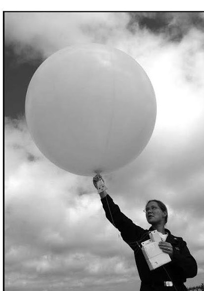
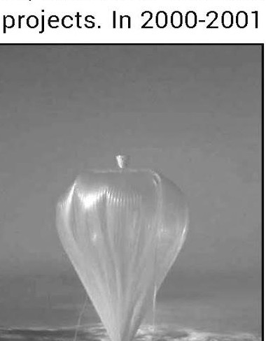
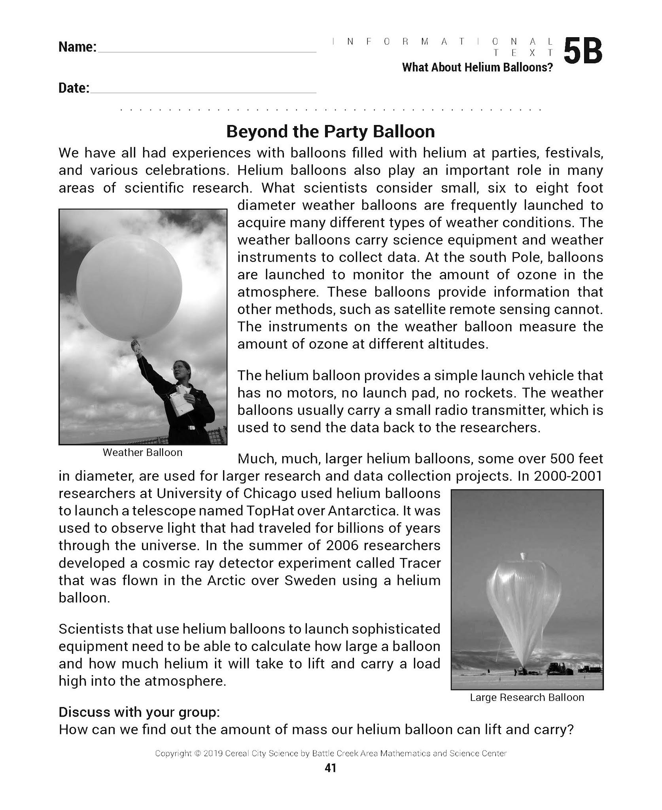
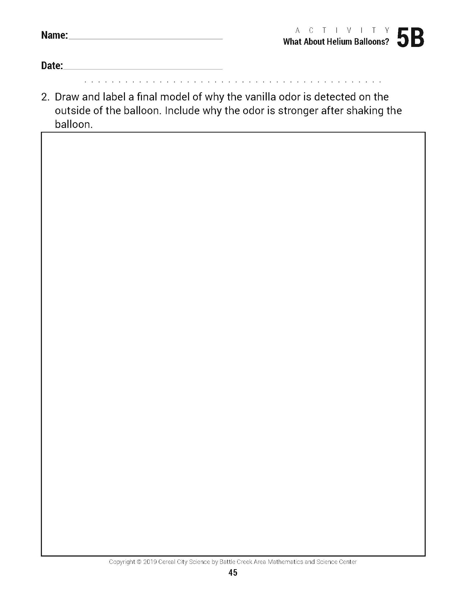

Beyond the Party Balloon We have all had experiences with balloons filled with helium at parties, festivals, and various celebrations. Helium balloons also play an important role in many areas of scientific research. What scientists consider small, six to eight foot diameter weather balloons are frequently launched to acquire many different types of weather conditions. The weather balloons carry science equipment and weather instruments to collect data. At the south Pole, balloons are launched to monitor the amount of ozone in the atmosphere. These balloons provide information that other methods, such as satellite remote sensing cannot. The instruments on the weather balloon measure the amount of ozone at different altitudes.
The helium balloon provides a simple launch vehicle that has no motors, no launch pad, no rockets. The weather balloons usually carry a small radio transmitter, which is used to send the data back to the researchers. Weather Balloon Much, much, larger helium balloons, some over 500 feet in diameter, are used for larger research and data collection projects. In 2000-2001 researchers at University of Chicago used helium balloons to launch a telescope named TopHat over Antarctica. It was used to observe light that had traveled for billions of years through the universe. In the summer of 2006 researchers developed a cosmic ray detector experiment called Tracer that was flown in the Arctic over Sweden using a helium balloon.
Scientists that use helium balloons to launch sophisticated equipment need to be able to calculate how large a balloon and how much helium it will take to lift and carry a load high into the atmosphere. Large Research Balloon Discuss with your group: How can we find out the amount of mass our helium balloon can lift and carry?

Weather Balloon (original journal photograph).

Large Research Balloon (original journal photograph).
Compare with original journal page 41
This is the unmarked scanned page for checking original diagrams, exact wording, or layout. The editable HTML content is above.

Activity 5B • What About Helium Balloons?Journal page 42 of 84
2. Draw and label a final model of why the vanilla odor is detected on the outside of the balloon. Include why the odor is stronger after shaking the balloon.
Compare with original journal page 45
This is the unmarked scanned page for checking original diagrams, exact wording, or layout. The editable HTML content is above.

Activity 5B • What About Helium Balloons?Journal page 46 of 84